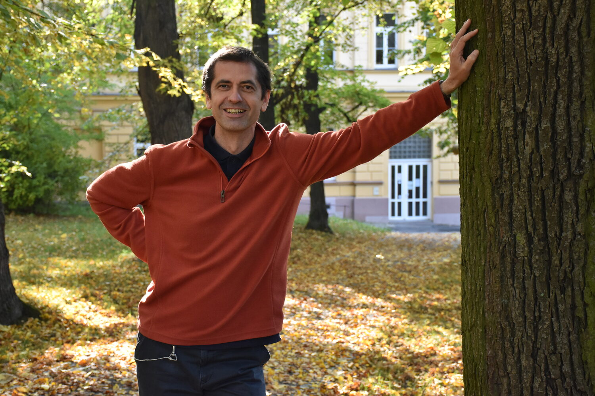

Cesta, která vedla přes fyziku, teologii a práci s mladými v ústavech až k dnešní psychoterapeutické praxi v Plzni. Od roku 1998 pracuji s dětmi, mladými i rodinami — profesionálně, a přesto stále s chutí.

Pocházím ze Slovácka. Jako dospívajícího mě uchvátila fyzika, vystudoval jsem difrakční optiku — hrál jsem si s lasery a holografií. Už během studií na vysoké škole mě to ale táhlo k pedagogice a výchově.
Dopadlo to tak, že jsem se coby křesťan stal salesiánem — to je moderní řeholní společnost, jejíž zakladatel, Ital Jan Bosco, pečoval o bezprizorní mládež. Vystudoval jsem teologii, byl vysvěcen na kněze, a šel pracovat do Pardubic.
V Centru Don Bosco jsme pomáhali mladým vyrůstajícím v ústavní výchově připravit se na samostatný život. A pak je především doprovázet a podporovat při budování samostatné existence. Několik let jsem tuto neziskovku vedl. Tady jsem už tehdy začal pracovat terapeuticky. Už během studia teologie jsem se přihlásil na Pedagogickou fakultu — obor arteterapie. Výtvarno mě bavilo odmala, a tak jsem chtěl, aby mohlo posloužit i druhým.
Po dvouleté zkušenosti — trochu jiného ražení — v brněnském Salesiánském středisku mládeže, kde jsem vedl kroužky, formoval skupiny mladých a pracoval ve farnosti, jsem zakotvil v Plzni. A opět jsem se dostal k práci s dětmi a mladými, tentokrát i s rodinami, které se ocitly ve svízelných situacích — potýkající se s vážnými výchovnými potížemi a problémovým chováním.
Už v Pardubicích jsem vnímal potřebnost hlubší psychoterapeutické formace a vyhlédl si výcvik v gestalt terapii. Kvůli vytíženosti jsem se do něj ale mohl pustit až v Plzni, a v roce 2023 ho úspěšně ukončit.
Vede mě přesvědčení křesťana, že život každého člověka je úžasný poklad, takový diamant, pro který má smysl nasadit všechny síly, aby se mohl vybrousit, a patřičně zářit.
Pět stupňů vzdělání, která dávají dohromady smysl — inženýrská technika mě naučila systematické myšlení, teologie a arteterapie zase práci s příběhem a obrazem. Gestalt výcvik to vše vepsal do terapeutické praxe.
Práce s lasery a holografií. První setkání s preciznou prací na detailech — přístup, který mi zůstal dodnes.
První ukazatel, že mě přitahuje víc než fyzika samotná — práce s lidmi a vzděláváním.
Studium, vysvěcení na kněze a vstup do řehole salesiánů Dona Boska.
Výtvarná tvorba jako cesta k sebevyjádření a terapeutickému poznání — o ní víc níže.
Pětiletý akreditovaný výcvik úspěšně ukončen. Od té doby pracuji terapeuticky v gestalt přístupu.
Od roku 1998 pracuji profesionálně s dětmi, mladými a rodinami — nejprve jako pedagog, pak jako vedoucí a sociální pracovník, dnes jako terapeut. Každá zastávka mi něco přidala.
První profesní zkušenost — práce s mládeží v salesiánském prostředí, s přestávkami na studia (2000–2002, 2004–2006).
Formace, která zasadila hlubší pohled na člověka a smysl — a vedla k vysvěcení.
Doprovázení mladých vyrůstajících v ústavní výchově — příprava na samostatný život a podpora při jeho budování. Tady začaly první terapeutické zkušenosti.
Dva roky ve farnosti a v práci s kroužky mladých — jiné prostředí, jiné tempo.
Návrat k přímé práci s dětmi a mladými — začátek plzeňské kapitoly.
Vedení služby pro rodiny v obtížných situacích — výchovné potíže, problémové chování, práce s celým rodinným systémem.
Přesun z vedení služby do přímé terapeutické práce — s již dokončeným gestalt výcvikem.
Paralelně se svým hlavním úvazkem vedu od roku 2020 vlastní psychoterapeutickou praxi pro dospívající, mladé dospělé a rodiče.
Abych mohl být dobrým terapeutem, potřebuji být dobrým člověkem. A pro dobrý život patří věci, které mě baví, nabíjejí a z nichž čerpám. Tady jsou.
„Rád vyrážím do přírody — je to ten nejlepší relax. V létě se toulat a přespávat pod širým nebem… Ale hory jsou the best!"
„Historie, divadlo, film…"
„Galerii neodolám. Především ale sám rád tvořím."
„Když je na ni čas, ideálně někde v příjemné kavárně, či na lavičce v parku…"
„Trekové, ideálně nahoru a dolů. Miluju ten pocit svobody vyrazit na několik dní, poháněn jen vlastní silou."
„Pocházím ze Slovácka, a tam se rodíme s písničkou na rtech."
„Především sám rád vařím a dělá mi velkou radost, když to strávníkům chutná…"
„Humor je klíčem k našim srdcím. Mr. Bean, pánové Donutil a Burian, a Cimrmani mě vždy spolehlivě rozvlní bránici."
„To je ten nejdůležitější opěrný bod. Vychutnávám si chvíle vzájemnosti, třeba se sklenkou dobrého vína…"
Každý život je uměleckým dílem vytvořeným všemi dostupnými prostředky.
Ozvěte se — rád si s vámi domluvím nezávaznou úvodní konzultaci.